My Completed Projects
Click on any of these to view projects I have completed over the course of my education:
Take a step into my life...
Click on any of these to view projects I have completed over the course of my education:
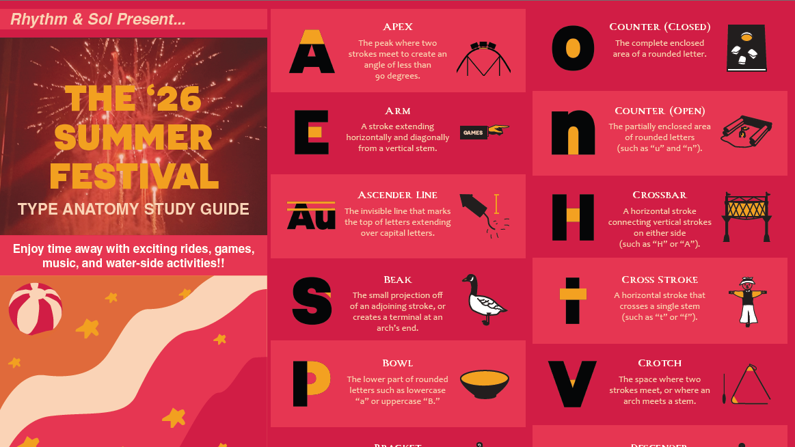
For this project, I worked on a z-fold and a poster with a peer. From choosing a theme, the colors, and typefaces to keeping in constant contact to get illustrations to each other as soon as possible, my peer and I worked seamlessly well together and achieved an "A" on this assignment. We worked with Adobe Illustrator and InDesign for this project.

This project is self-explanatory, I used Adobe Illustrator to create letters for a new typeface based on my hand-drawn drafts. This typeface would best be used in Halloween-related graphics.
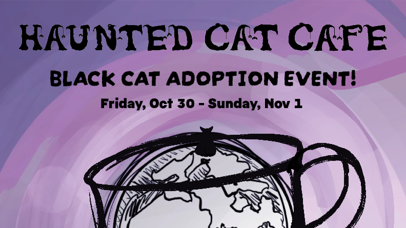
This was part two of my Typography final project, in which I had to use my newly-created typeface, Hellwebica. I applied all the design principles I learned during this course to a pretend-event poster. While the poster was arranged on InDesign, the cat, moon, sky, cup, cafe, and mountain illustrations were drawn on Procreate.
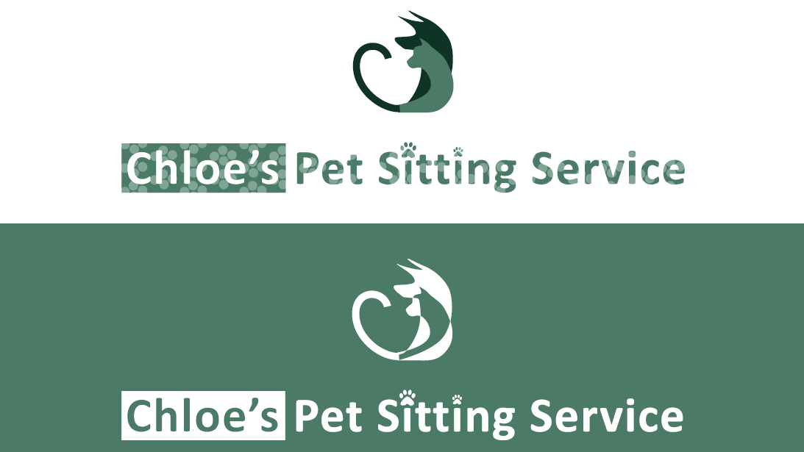
This project required me to draft and present logo ideas for a business, which, for this project, I chose my own business. I used Adobe Illustrator to put this full logo sheet together, including a colored, black, and white version of my logo.
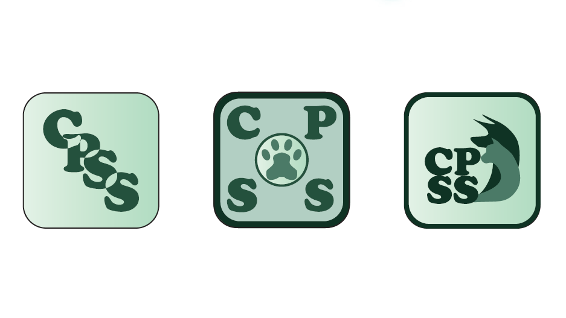
This project presents draft app icons for my pet care business. Additionally, in this project, I explored many of the features Adobe Illustrator has to offer including glowing text and 3D text effects.
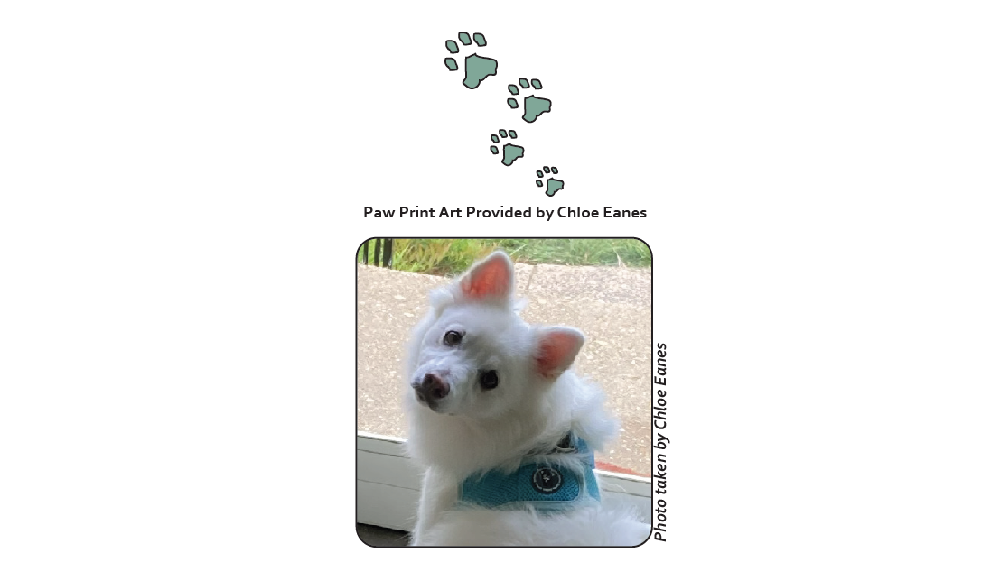
This Brochure was the final project for the InDesign unit. We were required to use include our branding guides and use guidelines to properly align the materials. This project was rushed due to file corruption when I was half way done, so the structure is not as aesthetically pleasing as I would have liked.
One note: the blank space on page four is supposed to contain a video. It has not appeared due to the file PDF file type.
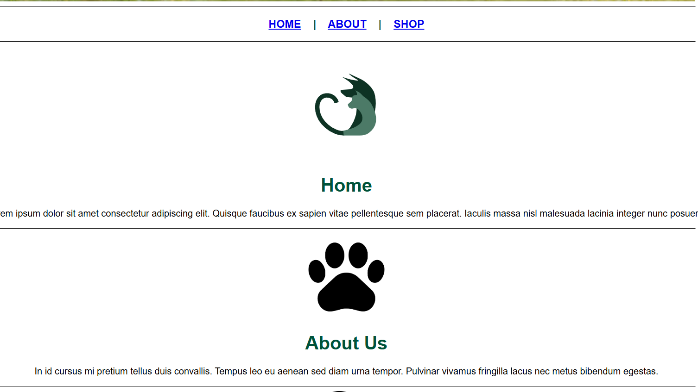
This was a bare-bones webpage project designed to help students learn basic HTML5. It taught us a simple business webpage layout using Notepad on Windows.
For my current skill level, check out the Web Authoring and Design section
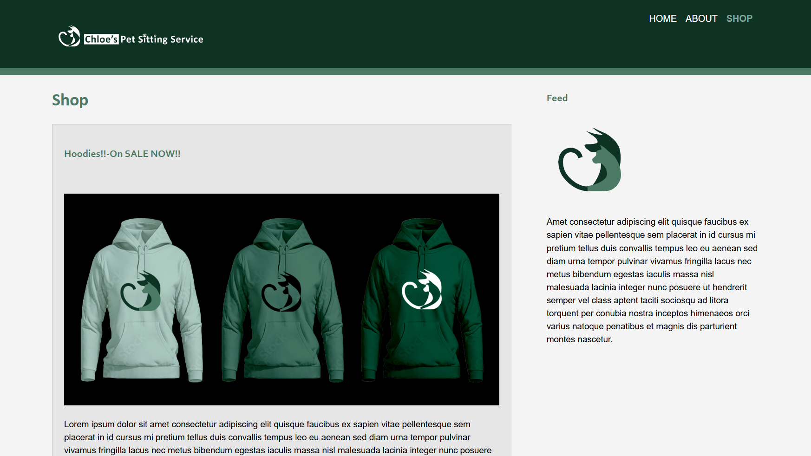
This project expands on the previous webpage project by requiring the usage of a free template and our previously-created materials. These "previously-created materials" include Photoshop art (images created using blending modes), shop items (hoodies with my business icon on them), and the full logo sheet. Adobe DreamWeaver was used to build this website.
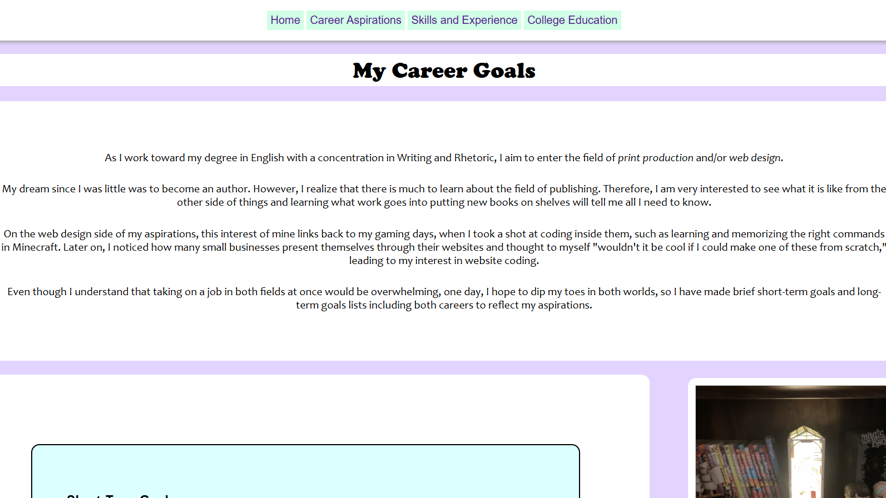
Where I started:)! I wrote all the code and took all of the images used on this site.
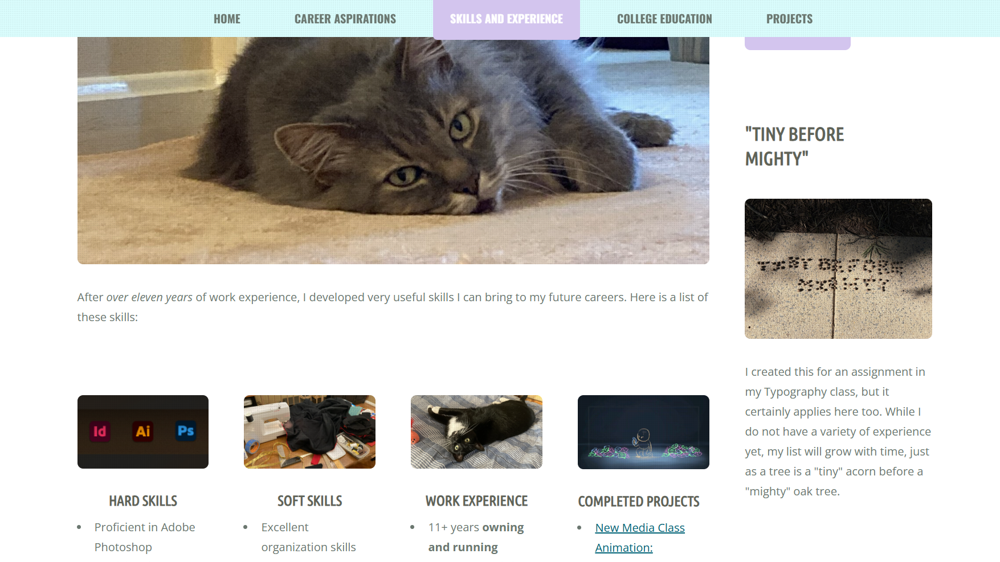
All of the info from the first site moved to a free template.
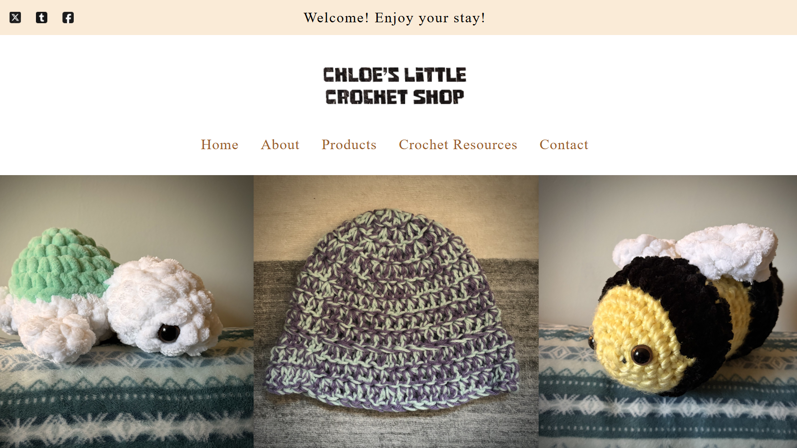
Disclaimer: not selling any products seen on the storefront right now and the social media icons do not go anywhere if you click on them. I wrote the code for this site from scratch as well. I learned how to include links to Stripe's sandbox checkout, a contact form (with the help of web3forms), and I included links to outside resources one might find helpful when beginning to crochet themselves.
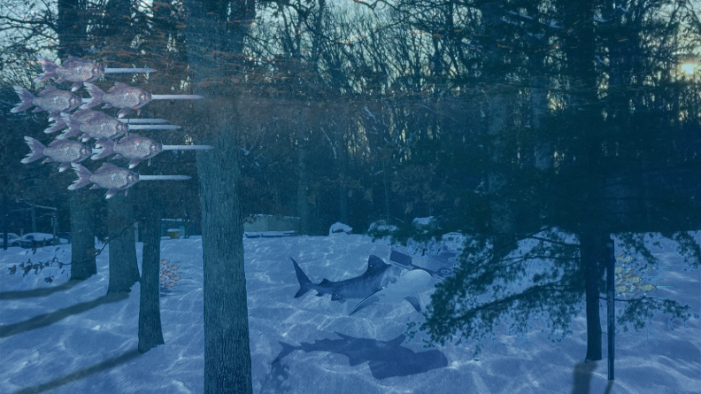
I used various Adobe Photoshop features to create an image outside of reality. Some features used include "remove background," "duplicate," and "adjust color tint/saturation."
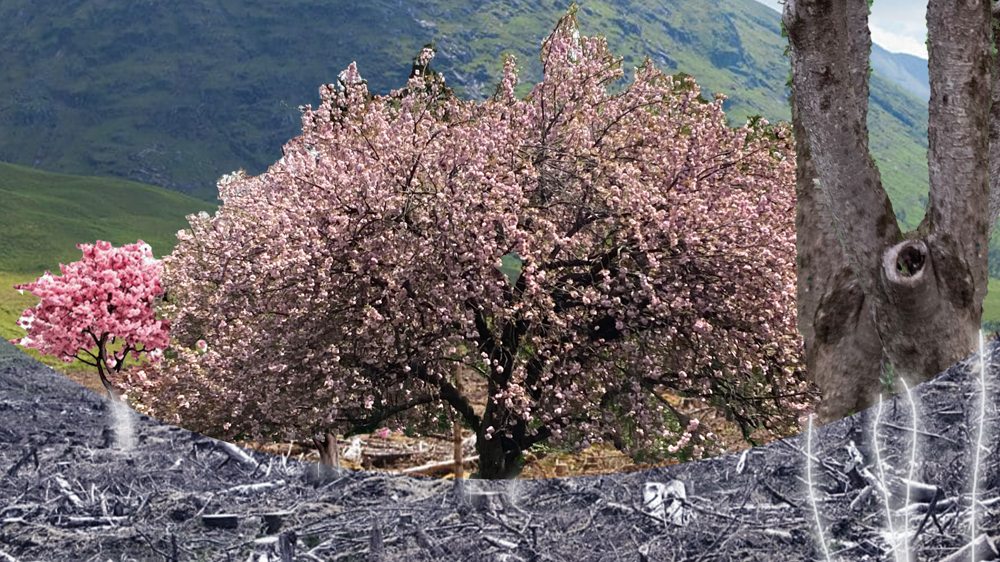
This one did not turn out as I hoped since trees have proven to be difficult to isolate, but I thought it would be right to include it anyways to show how I have grown as a graphic artist (this being closer to the beginning of my growth).
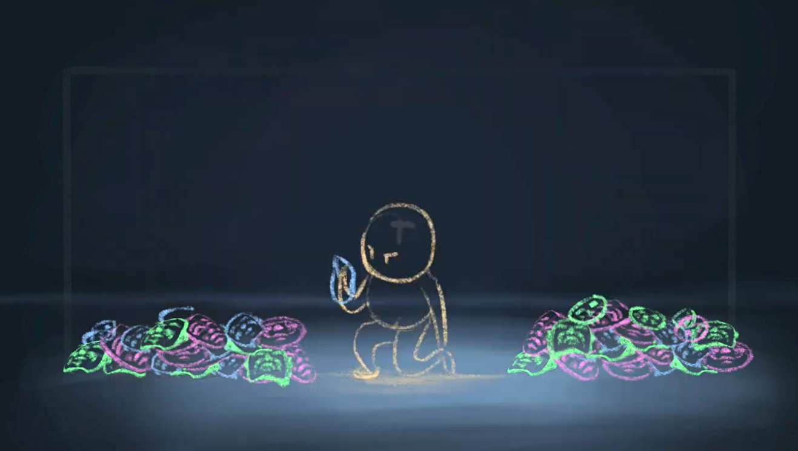
For this project, we had to create an animation based on another new media artist's work. We have the option of creating a GIF animation using Photoshop, or creating a video animation around thirty seconds to one minute long. I chose the latter and created a three-minute eleven-seconds animation about a little soul trying to figure out its identity, using Cindy Sherman's "film stills.""
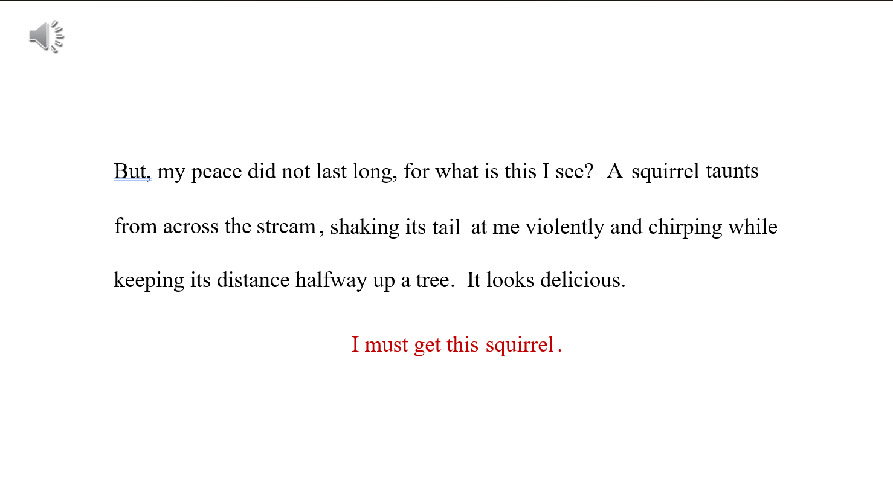
This project shows my visual storytelling skills through the usage of colors, sound effects, text motion effects, and timing on Powerpoint. This response follows a stray cat whose peaceful day was interrupted by a squirrel.
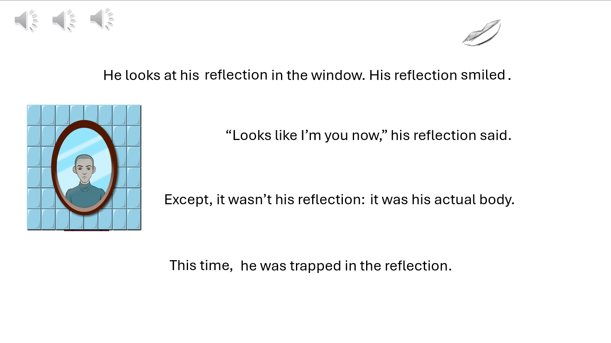
This project uses many of the same visual-storytelling features as "A Peaceful Day Interrupted," but includes imagery such as a character visual and eyes, mouth, and darkness animations (all hand-drawn by me except the mirror/bathroom background behind the man). This project also uses Powerpoint.
TW: FLASHING LIGHTS!! This project contains similar features to the previous two projects as well, but diverts from it in terms of the software used. I used Procreate for the lightbulb drawing/animation along with the text randomly appearing/disappearing over the course of the video. After that, I used iMovie for post-production activities (such as editing, adding in sound, and adding a "flashing lights" warning) Scholastic exhaustion explores the perspective of an overworked student who is half-in half-out of consciousness during class.